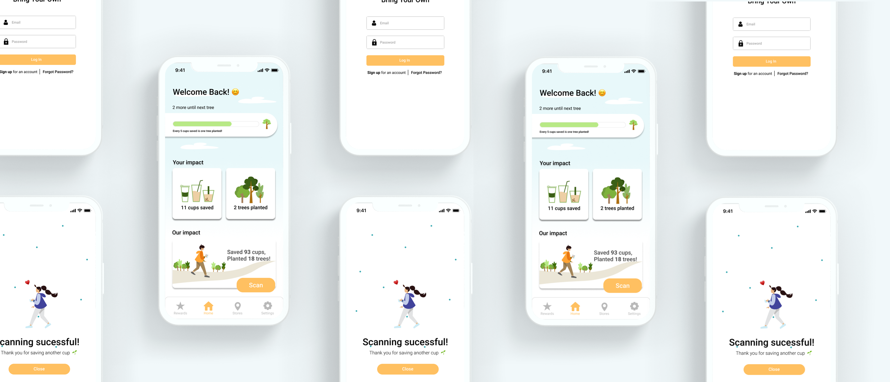

Project overview section

Context
4+ months, Spring 2021 - present
Bring your own cup app (v1)
Team & role
Thomas Lee, Priscilla Lam, Sun, Angela Sun (devs)
My role: lead UX designer, low-high-fidelity mockups
site-mapping, prototyping, user flows, website redesign
Overview
BYO is a mobile app-based program where customers who bring their own cups to local cafes can collect points towards rewards while contributing to global reforestation efforts by allocating a part of their usual discount to tree planting.
Project preview section
Grainjar cereal company website
Designing a brand style guide and building an e-commerce website for a fictional cereal company called grainjar.